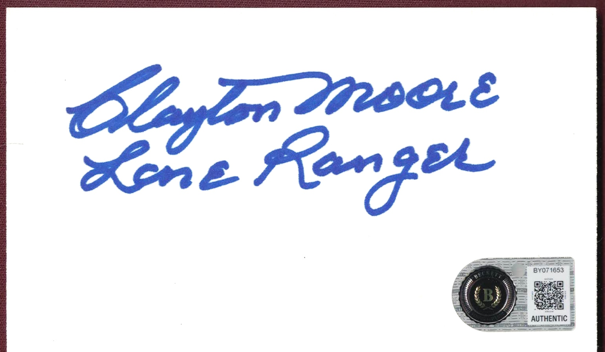

Product No. HEA-0328
$150
Shipping: $8.95
Description
Signed 3x5 index card, Not inscruibed,
Full Description
Clayton Moore (Deceased: September 14, 1914 – December 28, 1999) was an American actor best remembered for his iconic portrayal of the Lone Ranger, the masked Western hero of American television. Born Jack Carlton Moore in Chicago, Illinois, he developed an interest in athletics at an early age and became a circus acrobat and trapeze performer. He later worked as a professional male model before moving to Hollywood in 1938, where he found work as a stuntman and bit player. Moore's big break came in 1949 when he was selected to portray the Lone Ranger in the television series of the same name. He starred from 1949 to 1952 and returned in 1954, remaining until the series ended in 1957. His portrayal, alongside Jay Silverheels as Tonto, made him one of television's most recognizable Western stars. He also appeared in two feature films, The Lone Ranger (1956) and The Lone Ranger and the Lost City of Gold (1958). Moore became so closely identified with the character that he continued making personal appearances in the Lone Ranger costume for decades after the television series ended. In 1979, a court order temporarily prevented him from wearing the character's trademark mask, but the restriction was eventually lifted. In 1987, he received a star on the Hollywood Walk of Fame bearing both his name and that of the Lone Ranger. Clayton Moore died of a heart attack on December 28, 1999, at the age of 85, in West Hills, California. He remains one of the most enduring figures of classic television Westerns.
Authentication
Beckett #BY071653
Condition
Excellent condition